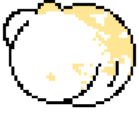
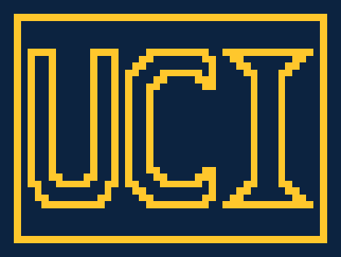
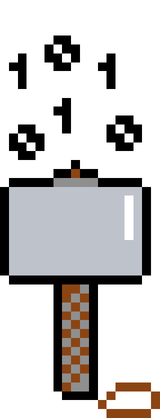

I am a software engineer with a passion for meaningful technology with intent to make a change in this world.


2016
Sept.
2016

I begun my B.S. in computer science @University of California, Irvine
Dec.
2016
I begun my internship @Novvum
2017
Jan.
2017
I ended my internship @Novvum
Jun.
2017
I begun my internship @HyreCar
Sept.
2017
I ended my internship @HyreCar
2018
2019
Jun.
2019
I begun research @University of California, Irvine
Sept.
2019
I ended research @University of California, Irvine
Sept.
2019
I begun to work as a junior software engineer @Cincinnati AI
2020
Jun.
2020
I completed my B.S. in computer science @University of California, Irvine
I was promoted to software engineer @Cincinnati AI
Sept.
2020
I begun my M.S. in software development @Boston University
2021
Jan.
2021
I begun research @Boston University

Tools
- Kotlin2+ years of use in professional and academic settings.
- Java1+ years of use in professional settings and 4+ years of years of use in academic settings.
- Python1- of use in professional settings and 4+ years of years of use in academic settings.
- Swift1+ of use in professional settings.
- Gradle2+ years of use in professional and academic settings.
- Git2+ years of use in professional and academic settings.
- OO Design2+ years of use in professional settings and 4+ years of years of use in academic settings.
- SOLID2+ years of use in professional and academic settings.
- MVVM2+ years of use in professional and academic settings.
- TDD2+ years of use in professional and academic settings.
- Agile2+ years of use in professional settings.
Projects
- GRUML (Generate Rectangular UML)Ongoing research project at Boston University to generate a novel form of diagram called Rectangular UML. Click the icon for more details!
- 1-5-10Ongoing personal project to help people keep track of their long-term goals. Click the icon for more details!
- Movie StoreEntire backend of a 'movie store' done in 10 weeks for my project course at UCI. Click the icon for more details!
- Algorithm VisualizerStudy tool for visual learners, currently only does some sorting algorithms. Click the icon for more details!
- Simulated OSProgram that mimics how an operating system functions. Click the icon for more details!